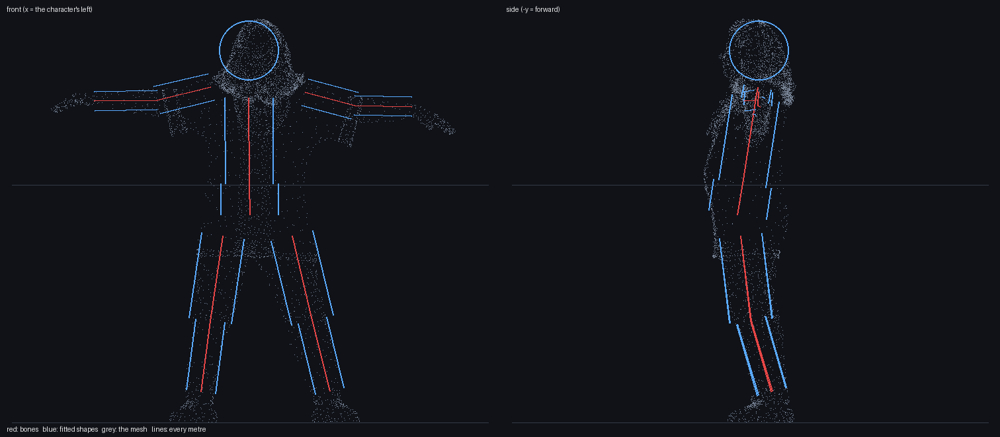
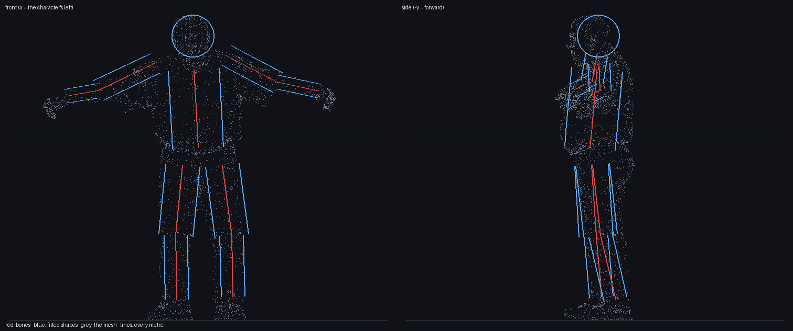
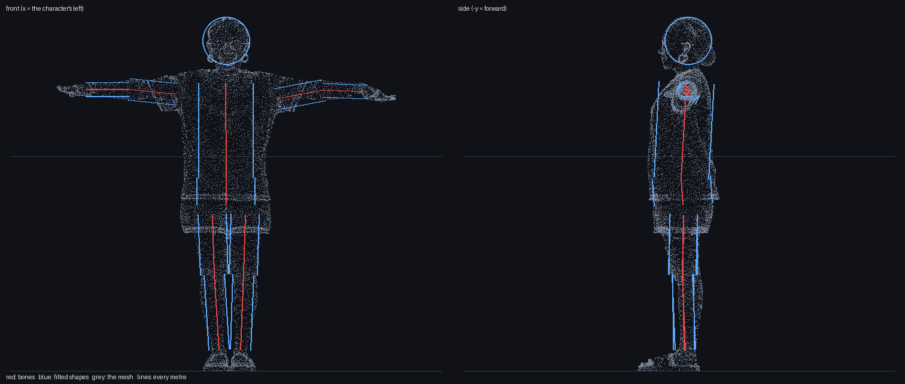
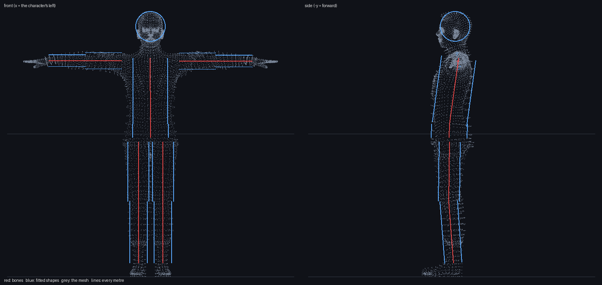
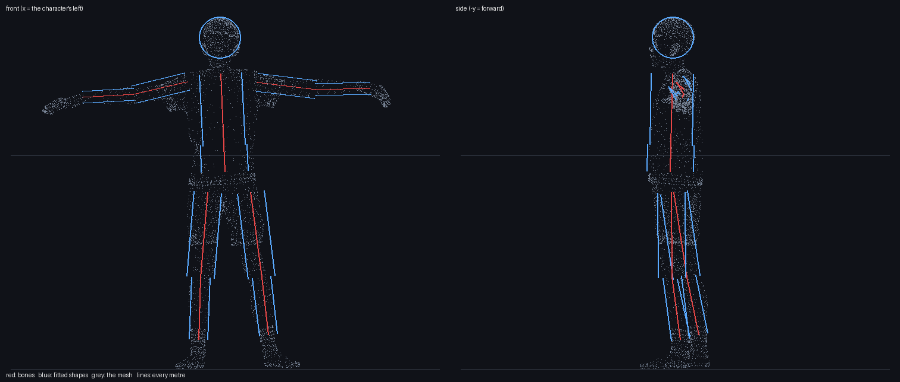
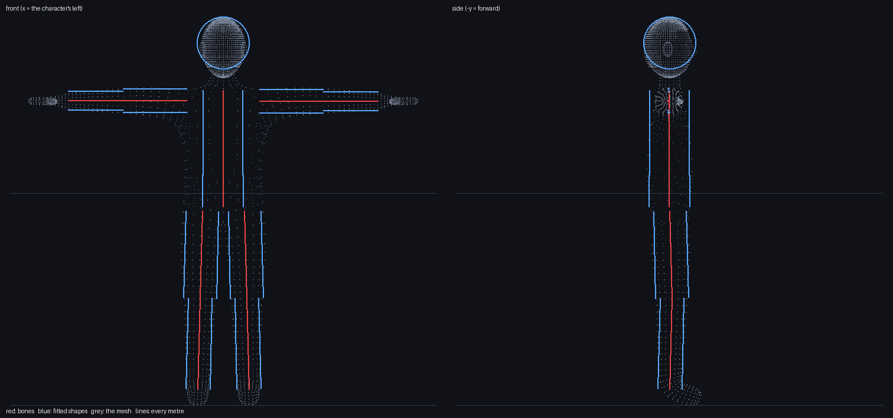
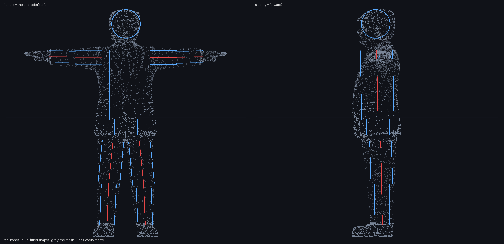
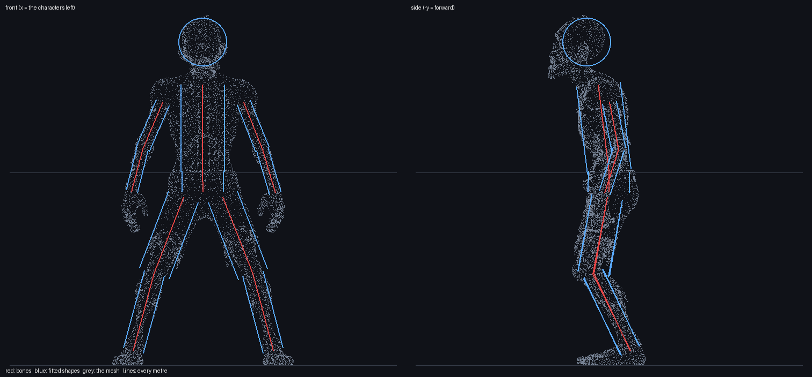

Collision fit, 2026-10-16
Each boxer's capsule radius (what it trains with, rigs/v2) as a share of how thick that part of its mesh is the thin way (training/tools/fit_check.py, from glb_to_rig.py's own measure). Green: inside the skin with at least 5% to spare. Amber: within 5% of the surface. Red: thicker than the part, so the shape shows through the skin on its narrow sides. The fitter aims for 92% on a limb and 90% on the trunk; a radius clamped to the part's lower bound, or a head (a sphere on a head that is longer than it is wide), can come out over.
| head | torso | pelvis | upper arm | forearm | thigh | shin | |
|---|---|---|---|---|---|---|---|
| GRANDMA | 106%12.5 / 11.8 cm | 90%10.0 / 11.2 cm | 90%12.2 / 13.5 cm | 87%5.8 / 6.6 cm | 92%4.0 / 4.4 cm | 86%9.0 / 10.5 cm | 87%6.2 / 7.1 cm |
| GRANDPA | 123%11.3 / 9.1 cm | 80%13.5 / 17.0 cm | 76%13.5 / 17.7 cm | 70%5.8 / 8.3 cm | 92%3.7 / 4.1 cm | 88%9.0 / 10.2 cm | 79%6.2 / 7.8 cm |
| KIM | 138%12.5 / 9.1 cm | 90%12.7 / 14.1 cm | 85%13.5 / 15.8 cm | 92%5.0 / 5.4 cm | 92%3.2 / 3.5 cm | 70%6.4 / 9.2 cm | 92%4.8 / 5.2 cm |
| MATT | 122%10.5 / 8.6 cm | 70%9.4 / 13.3 cm | 70%9.8 / 13.9 cm | 92%5.7 / 6.2 cm | 92%4.1 / 4.4 cm | 87%7.4 / 8.5 cm | 92%6.1 / 6.6 cm |
| NICK | 124%9.7 / 7.8 cm | 90%9.9 / 11.0 cm | 90%10.9 / 12.1 cm | 92%4.2 / 4.6 cm | 95%2.8 / 3.0 cm | 92%6.4 / 6.9 cm | 92%4.3 / 4.7 cm |
| SOKOL | 132%12.3 / 9.4 cm | 90%9.2 / 10.2 cm | 90%9.5 / 10.5 cm | 92%5.6 / 6.1 cm | 92%4.5 / 4.9 cm | 92%7.8 / 8.5 cm | 92%5.6 / 6.1 cm |
| TRUMP | 100%12.0 / 12.0 cm | 56%10.5 / 18.7 cm | 70%7.6 / 10.8 cm | 68%5.8 / 8.5 cm | 72%4.8 / 6.7 cm | 88%9.0 / 10.3 cm | 73%6.2 / 8.5 cm |
| ZOMBIE | 121%12.5 / 10.3 cm | 80%10.0 / 12.6 cm | 79%9.4 / 11.8 cm | 92%3.7 / 4.0 cm | 92%3.0 / 3.2 cm | 92%8.1 / 8.8 cm | 92%5.3 / 5.8 cm |
Self-contact (pass, MuJoCo 3.5.0)
grandma: 17 shapes (box, capsule, sphere) on 12 body parts; 55 of 66 pairs of parts collide, 11 are excluded (joined by a joint) no part touches another in 25 poses: T-pose, guard, 23 steps of walking and punching grandpa: 17 shapes (box, capsule, sphere) on 12 body parts; 55 of 66 pairs of parts collide, 11 are excluded (joined by a joint) no part touches another in 25 poses: T-pose, guard, 23 steps of walking and punching kim: 17 shapes (box, capsule, sphere) on 12 body parts; 55 of 66 pairs of parts collide, 11 are excluded (joined by a joint) no part touches another in 25 poses: T-pose, guard, 23 steps of walking and punching matt: 17 shapes (box, capsule, sphere) on 12 body parts; 55 of 66 pairs of parts collide, 11 are excluded (joined by a joint) no part touches another in 25 poses: T-pose, guard, 23 steps of walking and punching nick: 17 shapes (box, capsule, sphere) on 12 body parts; 55 of 66 pairs of parts collide, 11 are excluded (joined by a joint) no part touches another in 25 poses: T-pose, guard, 23 steps of walking and punching sokol: 17 shapes (box, capsule, sphere) on 12 body parts; 55 of 66 pairs of parts collide, 11 are excluded (joined by a joint) no part touches another in 25 poses: T-pose, guard, 23 steps of walking and punching trump: 17 shapes (box, capsule, sphere) on 12 body parts; 55 of 66 pairs of parts collide, 11 are excluded (joined by a joint) no part touches another in 25 poses: T-pose, guard, 23 steps of walking and punching zombie: 17 shapes (box, capsule, sphere) on 12 body parts; 55 of 66 pairs of parts collide, 11 are excluded (joined by a joint) no part touches another in 25 poses: T-pose, guard, 23 steps of walking and punching
The meshes with their fitted shapes (the fitter's radii, before any slimming)







